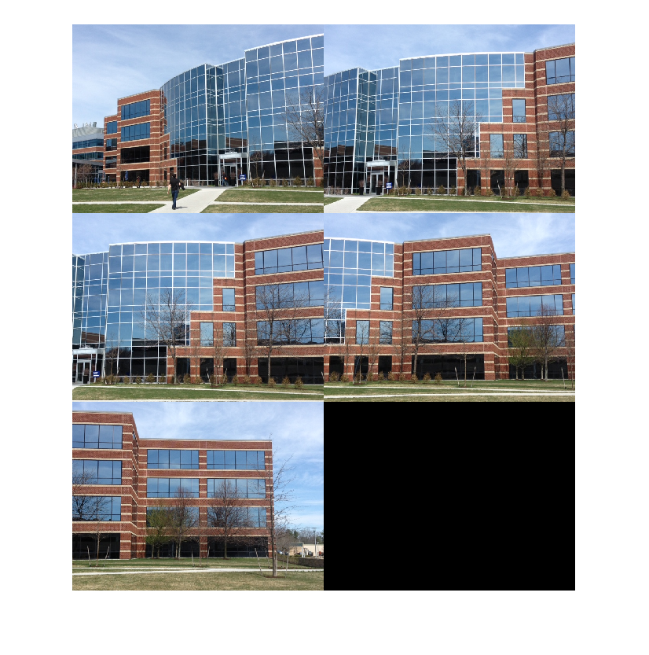
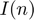
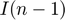
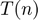
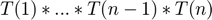
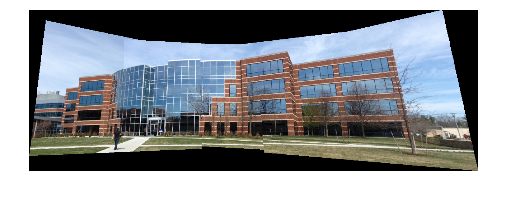

Feature Based Panoramic Image Stitching
This example shows how to automatically create a panorama using feature based image registration techniques.
Contents
Overview
Feature detection and matching are powerful techniques used in many computer vision applications such as image registration, tracking, and object detection. In this example, feature based techniques are used to automatically stitch together a set of images. The procedure for image stitching is an extension of feature based image registration. Instead of registering a single pair of images, multiple image pairs are successively registered relative to each other to form a panorama.
Step 1 - Load Images
The image set used in this example contains pictures of a building. These were taken with an uncalibrated smart phone camera by sweeping the camera from left to right along the horizon, capturing all parts of the building.
As seen below, the images are relatively unaffected by any lens distortion so camera calibration was not required. However, if lens distortion is present, the camera should be calibrated and the images undistorted prior to creating the panorama. You can use the cameraCalibrator App to calibrate a camera if needed.
% Load images. buildingDir = fullfile(toolboxdir('vision'), 'visiondata', 'building'); buildingScene = imageDatastore(buildingDir); % Display images to be stitched montage(buildingScene.Files)
Step 2 - Register Image Pairs
To create the panorama, start by registering successive image pairs using the following procedure:
- Detect and match features between  and .
- Estimate the geometric transformation, , that maps to .
- Compute the transformation that maps into the panorama image as .
% Read the first image from the image set. I = readimage(buildingScene, 1); % Initialize features for I(1) grayImage = rgb2gray(I); points = detectSURFFeatures(grayImage); [features, points] = extractFeatures(grayImage, points); % Initialize all the transforms to the identity matrix. Note that the % projective transform is used here because the building images are fairly % close to the camera. Had the scene been captured from a further distance, % an affine transform would suffice. numImages = numel(buildingScene.Files); tforms(numImages) = projective2d(eye(3)); % Iterate over remaining image pairs for n = 2:numImages % Store points and features for I(n-1). pointsPrevious = points; featuresPrevious = features; % Read I(n). I = readimage(buildingScene, n); % Detect and extract SURF features for I(n). grayImage = rgb2gray(I); points = detectSURFFeatures(grayImage); [features, points] = extractFeatures(grayImage, points); % Find correspondences between I(n) and I(n-1). indexPairs = matchFeatures(features, featuresPrevious, 'Unique', true); matchedPoints = points(indexPairs(:,1), :); matchedPointsPrev = pointsPrevious(indexPairs(:,2), :); % Estimate the transformation between I(n) and I(n-1). tforms(n) = estimateGeometricTransform(matchedPoints, matchedPointsPrev,... 'projective', 'Confidence', 99.9, 'MaxNumTrials', 2000); % Compute T(1) * ... * T(n-1) * T(n) tforms(n).T = tforms(n-1).T * tforms(n).T; end
At this point, all the transformations in tforms are relative to the first image. This was a convenient way to code the image registration procedure because it allowed sequential processing of all the images. However, using the first image as the start of the panorama does not produce the most aesthetically pleasing panorama because it tends to distort most of the images that form the panorama. A nicer panorama can be created by modifying the transformations such that the center of the scene is the least distorted. This is accomplished by inverting the transform for the center image and applying that transform to all the others.
Start by using the projective2d outputLimits method to find the output limits for each transform. The output limits are then used to automatically find the image that is roughly in the center of the scene.
imageSize = size(I); % all the images are the same size % Compute the output limits for each transform for i = 1:numel(tforms) [xlim(i,:), ylim(i,:)] = outputLimits(tforms(i), [1 imageSize(2)], [1 imageSize(1)]); end
Next, compute the average X limits for each transforms and find the image that is in the center. Only the X limits are used here because the scene is known to be horizontal. If another set of images are used, both the X and Y limits may need to be used to find the center image.
avgXLim = mean(xlim, 2); [~, idx] = sort(avgXLim); centerIdx = floor((numel(tforms)+1)/2); centerImageIdx = idx(centerIdx);
Finally, apply the center image's inverse transform to all the others.
Tinv = invert(tforms(centerImageIdx)); for i = 1:numel(tforms) tforms(i).T = Tinv.T * tforms(i).T; end
Step 3 - Initialize the Panorama
Now, create an initial, empty, panorama into which all the images are mapped.
Use the outputLimits method to compute the minimum and maximum output limits over all transformations. These values are used to automatically compute the size of the panorama.
for i = 1:numel(tforms) [xlim(i,:), ylim(i,:)] = outputLimits(tforms(i), [1 imageSize(2)], [1 imageSize(1)]); end % Find the minimum and maximum output limits xMin = min([1; xlim(:)]); xMax = max([imageSize(2); xlim(:)]); yMin = min([1; ylim(:)]); yMax = max([imageSize(1); ylim(:)]); % Width and height of panorama. width = round(xMax - xMin); height = round(yMax - yMin); % Initialize the "empty" panorama. panorama = zeros([height width 3], 'like', I);
Step 4 - Create the Panorama
Use imwarp to map images into the panorama and use vision.AlphaBlender to overlay the images together.
blender = vision.AlphaBlender('Operation', 'Binary mask', ... 'MaskSource', 'Input port'); % Create a 2-D spatial reference object defining the size of the panorama. xLimits = [xMin xMax]; yLimits = [yMin yMax]; panoramaView = imref2d([height width], xLimits, yLimits); % Create the panorama. for i = 1:numImages I = readimage(buildingScene, i); % Transform I into the panorama. warpedImage = imwarp(I, tforms(i), 'OutputView', panoramaView); % Generate a binary mask. mask = imwarp(true(size(I,1),size(I,2)), tforms(i), 'OutputView', panoramaView); % Overlay the warpedImage onto the panorama. panorama = step(blender, panorama, warpedImage, mask); end figure imshow(panorama)
Conclusion
This example showed you how to automatically create a panorama using feature based image registration techniques. Additional techniques can be incorporated into the example to improve the blending and alignment of the panorama images[1].
References
[1] Matthew Brown and David G. Lowe. 2007. Automatic Panoramic Image Stitching using Invariant Features. Int. J. Comput. Vision 74, 1 (August 2007), 59-73.